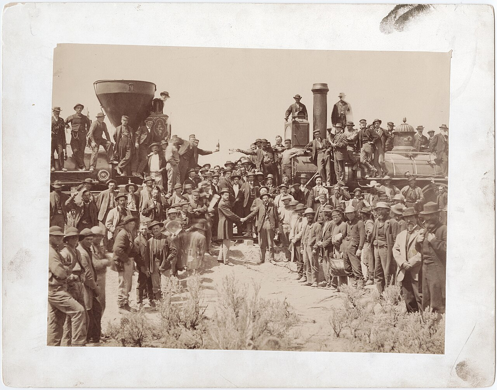

Directions: Study the photograph and the background note, then answer the questions.

Background. The Central Pacific built east from Sacramento, California, and the Union Pacific built west from Omaha, Nebraska. The Pacific Railway Act of 1862 supported both companies with federal loans and grants of public land. On May 10, 1869, the two lines met at Promontory Summit, between the locomotives of the two companies.
1. What details in the photograph show that two separately built lines are meeting, rather than one crew finishing a single road?
2. In 1868, freight from New York to Sacramento traveled by ship, a trip of weeks or months. What changed on May 10, 1869, and what had the federal government done to make the change possible?
3. A mill manager in 1875 is buying rails for a busy line. Why would he order Bessemer steel rails instead of iron rails? Answer with what the Bessemer process did to the price of steel and what steel did better than iron.
4. A Cleveland refiner in 1880 loads tank cars of kerosene for New York. Name two other parts of the industrial system from this lesson that his shipment depends on, and explain what each one contributes.
1. What details in the photograph show that two separately built lines are meeting? Two locomotives face each other nose to nose on a single track, with crowds of officials and workers gathered between and around them. A single crew finishing one road would show one train and work equipment, not two engines meeting head on with a formal handshake at the center. Students should cite the two facing locomotives and the ceremony itself. [Blueprint 1]
2. What changed on May 10, 1869, and what had the federal government done? The two lines were joined at Promontory Summit, so passengers and freight could cross the continent by rail in days instead of traveling by sea for weeks or months. The federal government made it possible through the Pacific Railway Act of 1862, which gave the companies loans and grants of public land along the route. [Blueprint 1]
3. Why would a mill manager in 1875 order Bessemer steel rails instead of iron rails? The Bessemer process blew air through molten iron and burned out impurities in minutes, so steel could be made by the ton and its price fell. Steel rails lasted far longer under heavy traffic than iron rails, which wore out quickly. A busy line therefore paid less for steel over time in material and in replacement. [Blueprint 2]
4. Name two other parts of the industrial system that a kerosene shipment depends on, and explain each. Any two, explained. The railroad itself, which carries the tank cars and gives the largest shippers the lowest rates. The refinery system, which separated his crude oil into kerosene in the first place and rewarded his scale. The telegraph, which lets him learn New York prices and direct the shipment before it moves. The corporation and its capital, which financed the refinery, the tank cars, and the railroad. Credit requires the contribution, not only the name. [Blueprint 2]
Teacher note. This check is formative. Question 1 is the observation diagnostic. Students who describe only a celebration have not yet read a photograph for evidence. Question 4 predicts success on the writing task, because it asks for the same two way dependence the essay requires.